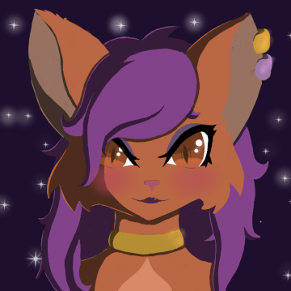
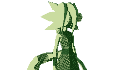
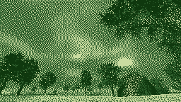

GVBI.len
3D Artist, Game Developer, Programmer
Location:
South Africa, Earth
Timezone:
SAST
Skills:
- 3D Modeling and Animation
- DevOps
- Frontend Development
- Game Development
- Graphic Design
- Software Development
- UI/UX Development
- Web Development
Projects
Akorus

3D, GAME, MOBILE, PCAKORUS is a science fiction role-playing game that combines classic RPG mechanics with a retro PlayStation 1–inspired aesthetic.
Geothera

ADDON, SOFTWARE, LINUX, WINDOWSGeothera is a free and open source terrain generation software made entirely in Godot.
An addon for the game engine is also available for creating terrain cells from heightmap textures within the game engine.
ArtStation e-Mail GitHub itch.io